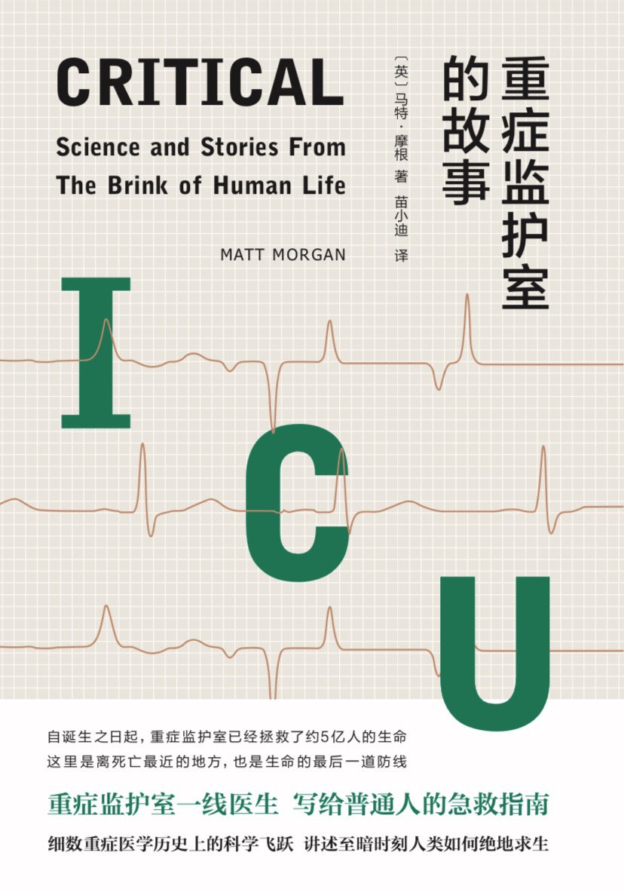

|  |
重症监护室的故事 |
主编序 生命、医学和人文故事
1981年4月26日，在迈克尔·哈里森医生的主持下，美国加利福尼亚大学旧金山分校医院进行了世界上首例成功的人类开放式胎儿手术。接受手术的孕妇腹中的胎儿患有先天性的尿路阻塞，出现了肾积水，这很可能导致胎儿在出生之前就肾脏坏死，危及生命。为了抢救胎儿的生命，做手术的医生给胎儿做了膀胱造口术，在胎儿的膀胱中放置了一根临时性的导管让尿液正常释放。胎儿出生之后，医生又进行了尿路再造手术，彻底解决了这个婴儿的遗传缺陷。
每年在美国出生的约400万婴儿中，约有12万（约占3%）患有某种先天性缺陷，其中一部分可以在出生后得到成功治疗。随着胎儿影像学和各种无创产前检查技术在过去几十年中取得突破性进展，我们对胎儿发育的了解也有很大程度的提高，越来越多的诊断工具使我们能够更精确地识别胎儿发育过程中出现的病情及其恶化的程度和速度，同时辅助我们开发新的医疗技术来帮助子宫内的胎儿早日康复。
2012年4月17日，年仅七岁的美国女孩艾米丽成为第一个接受“融合抗原受体疗法”（Chimeric Antigen Receptor Therapy，简称CAR—T疗法）治疗的儿科患者。在其后的几个星期里，费城儿童医院的医生从艾米丽的血液中提取她的免疫T细胞，将其在体外培养，然后用最先进的生物工程技术对这些免疫T细胞进行了化学修饰，使得这些免疫T细胞能有效识别正在艾米丽体内野蛮生长的癌细胞。体外实验成功之后，这些修饰后的（融合抗原受体）免疫T细胞被重新植入艾米丽的血液中，再次与癌细胞决一死战。
从五岁开始，勇敢的艾米丽与一种最常见的儿童癌症—急性淋巴细胞白血病—顽强地抗争了两年，她的医生穷尽了当时已有的一切治疗方法，在短暂的疗效之后，癌细胞总是一次又一次卷土重来，侵蚀着她越来越虚弱的生命。这一次会有不同的结果吗？修饰后的免疫T细胞移植后，剧烈的免疫反应开始了，昏迷中的艾米丽在生与死的边缘足足挣扎了两个星期。她战胜了死神，苏醒过来，随后的测试震惊了所有人：癌细胞不见了，而那些修饰后的T细胞仍然在那里，准备清除任何试图卷土重来的癌细胞。